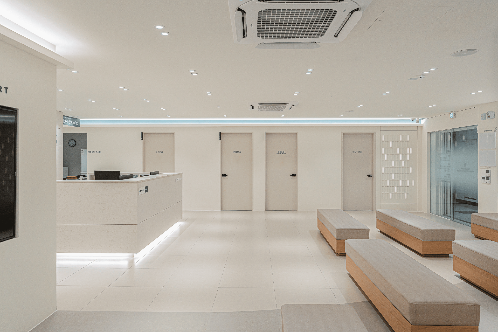
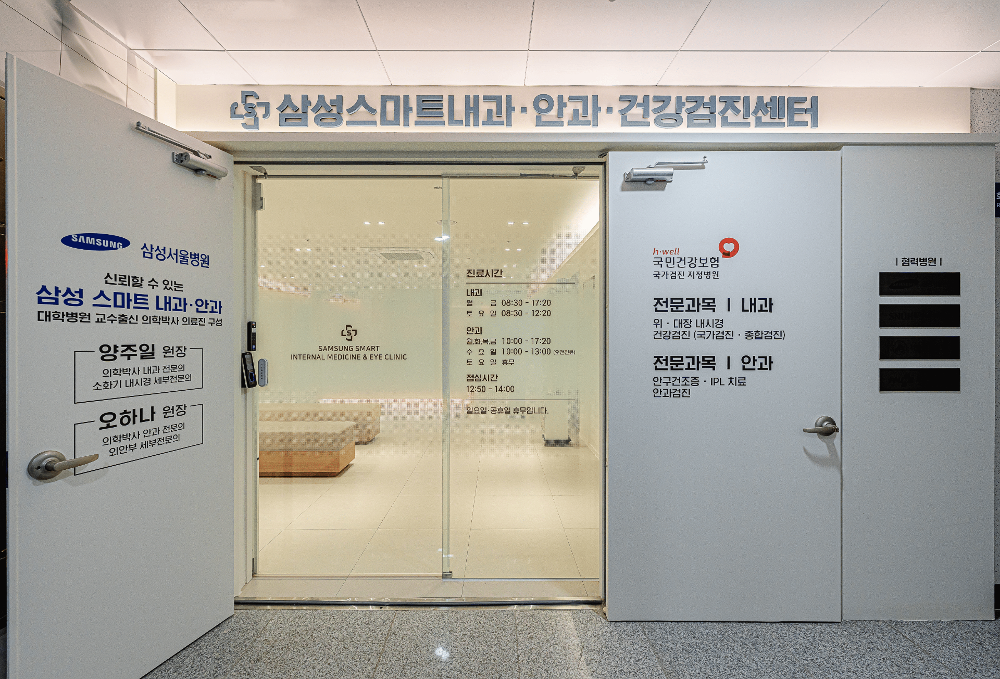
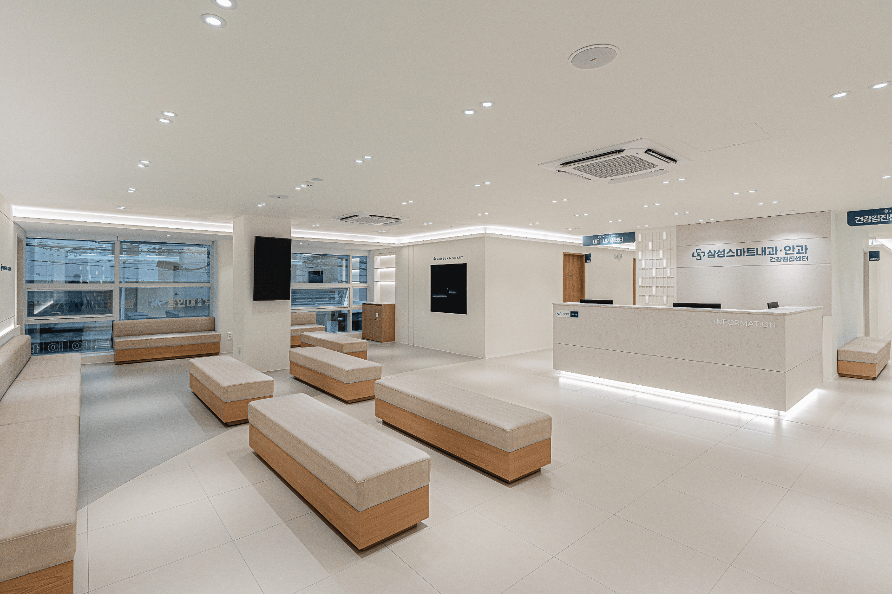
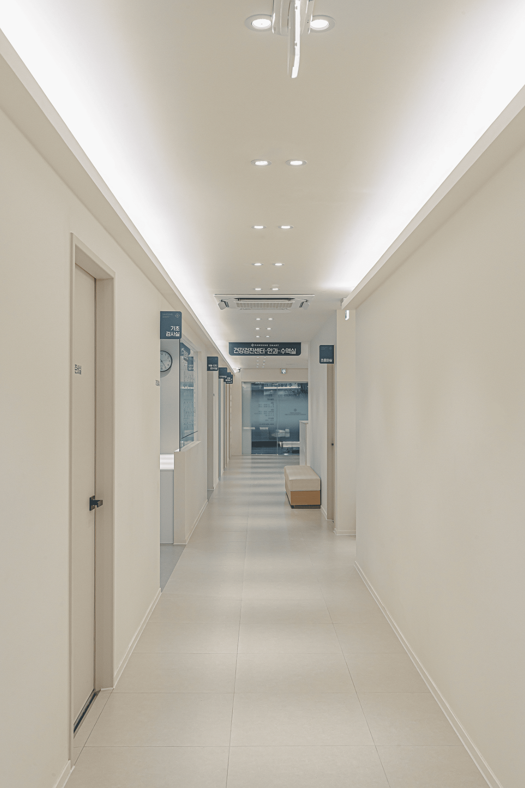
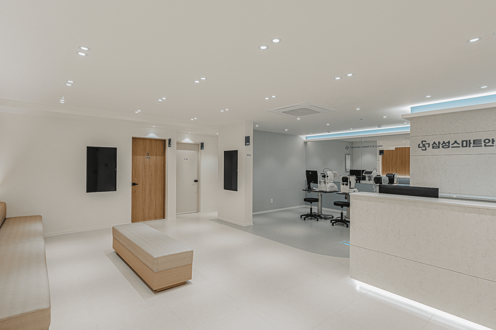
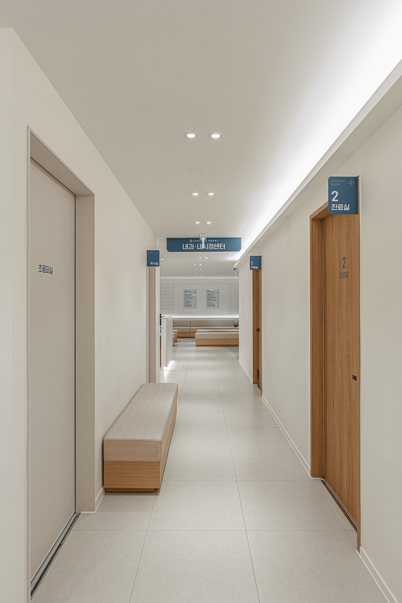
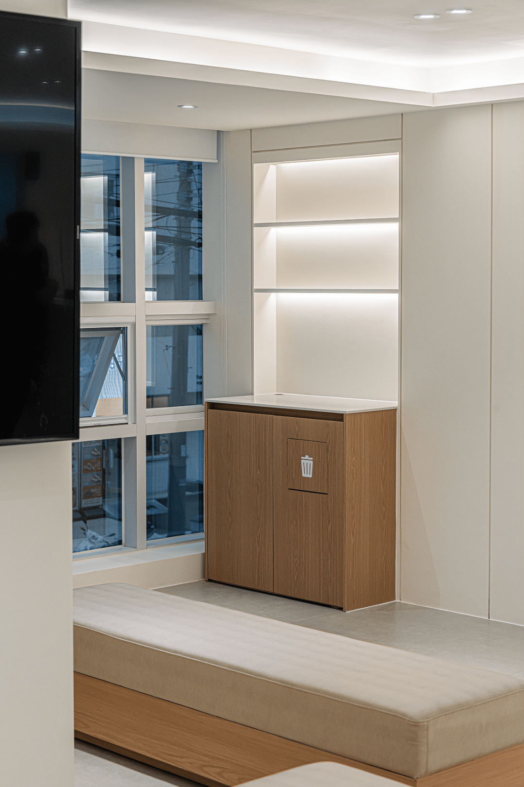

성공적인 메디컬 개원을 위한 진료과목별 맞춤 동선 설계 기획
내과, 치과, 이비인후과 등 각 진료과목의 특성에 맞춘 환자 및 의료진 동선 기획은 병원 운영의 효율성과 직결됩니다. 환자의 심리적 부담을 덜고 직원의 이동을 최소화하는 비법을 공개합니다.

내과, 외과, 안과, 피부과, 성형외과까지, 각 진료과목의 특성과 의료법을 완벽히 이해한 맞춤형 인테리어를 선보입니다. 실내건축공사업 면허를 보유한 검증된 전문성과 하이엔드 디자인 감각으로, 환자와 의료진 모두에게 신뢰감을 주는 품격 있는 병원 공간을 완성합니다.
메디컬 인테리어는 아름다움뿐만 아니라 고도의 기능적 결합이 요구됩니다. 동선 한 걸음의 차이가 진료 효율을 극대화하고 환자의 신뢰를 좌우합니다.
각 진료과목별 필수 면적 기준, 소방 대피로, 방사선 차폐 벽체 및 전용 음압/양압 설비를 완벽하게 준수하여 시공합니다.
눈부심을 억제한 간접 광원 설계 및 따스한 천연 패브릭 질감으로 치료 전 환자의 심리적 압박감을 최소화합니다.
건설공업면허 기반의 하자보증증권 발행을 필두로, 준공 후 신속한 AS 전담대응팀을 통해 병원 진료 중단을 완벽히 방어합니다.
많은 업체들이 친환경과 프리미엄을 내세우지만, 법률 검토와 마감 기술력의 밀도 차이는 확연하게 드러납니다.

Dentistry

Dermatology

Internal Medicine

Plastic Surgery

Surgery Clinic

Aesthetics
성공적인 병원 개원을 위해 국가 인증 실내건축공업 면허 보유 전문가가 집필한 핵심 지식을 투명하게 나눕니다.

내과, 치과, 이비인후과 등 각 진료과목의 특성에 맞춘 환자 및 의료진 동선 기획은 병원 운영의 효율성과 직결됩니다. 환자의 심리적 부담을 덜고 직원의 이동을 최소화하는 비법을 공개합니다.

병원 인테리어에서 가장 까다로운 소방, 공조 및 방사선 차폐 설비의 기준을 명확히 제시하고 시공 시 주의해야 할 점을 알아봅니다.

단순한 대기 공간을 넘어, 고급스러운 호텔식 라운지 감성을 더해 환자의 불안감을 해소하고 병원의 브랜드 가치를 높이는 인테리어 기법입니다.

건물의 외부 전면과 입구 디자인을 통해 병원의 전문성과 신뢰감을 전달하고 브랜드 가치를 극대화하는 브랜딩 전략을 다룹니다.

병원 공사는 1,500만 원 이상의 고액 시공이 대부분이므로, 법적으로 등록된 전문 면허 업체와 계약해야 법적 보호와 완벽한 사후관리를 보장받을 수 있습니다.

착공부터 준공, 그리고 개원 이후까지 단계별 품질 검증 및 하자보수 이행 보증을 통해 병원의 지속 가능성을 보장하는 사후 관리 체계를 상세 설명합니다.
최고급 마감재 사용 및 감성적인 라운지 구성, 그리고 체계화된 조도 디자인의 결합입니다.
저희는 이탈리아산 천연 대리석, 오이코스 무독성 친환경 페인트 등 최상위 프리미엄 마감재만을 취급합니다. 또한 환자가 병원에 도달했을 때 느끼는 차갑고 불안한 심리를 낮추고자 아늑한 간접 광원 설계와 호텔 라운지급 대기실 조성을 조화시킴으로써 일반 시공업체와는 완전히 다른 차원의 브랜드 만족도와 치유 가치를 고객에게 선사합니다.
의료법상 법적 인허가 기준을 선제적으로 완벽하게 충족하며, 과목별 동선 분리와 전문 설비 설계를 최우선시해야 합니다.
보건소 개원 인허가 기준에 미달해 준공 검사가 거부되거나 수술실이 비법정 규격으로 완공될 시 대규모의 매몰 비용과 재공사가 수반됩니다. 당사는 내과/소아청소년과의 환자-의료진 감염 방지 동선, 치과의 체어 전용 복잡 설비 인프라, 엑스레이실 및 CT실의 납차폐 차단 설계 등 진료과목별 맞춤 특수 조건들을 사전 분석하여 안전하고 오차 없는 정밀 설계를 약속합니다.
공사 금액이 1,500만 원 이상일 시 반드시 국가 공인 건설업 면허인 '실내건축공사업 면허'가 등록되어 있는 건설 업체와 계약해야 법적으로 안전합니다.
건설산업기본법에 명시된 엄연한 법적 사항으로, 면허가 없는 무등록 불법 시공업체와 진행 시 다음과 같은 심각한 법적 및 물질적 손해를 온전히 입게 될 위험성이 높습니다: